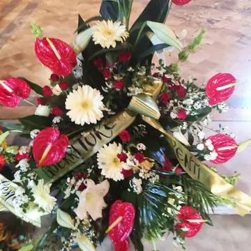
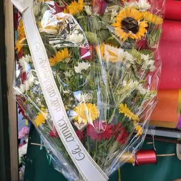
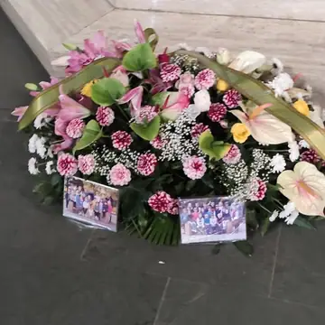
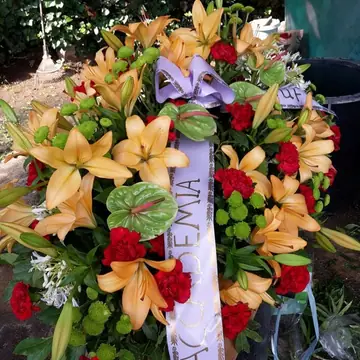
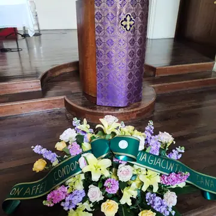
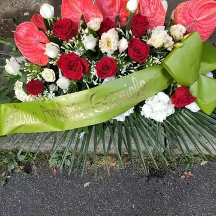
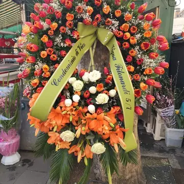
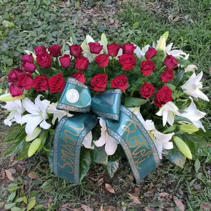

Fiori e composizioni funebri a Roma
Tocca una foto per ingrandirla e inviarla a Nino su WhatsApp.



















Scegli un omaggio floreale
Sfoglia le composizioni per trovare un omaggio adatto al momento. La foto serve a indicare lo stile e i colori che preferisci. Puoi anche specificare il tipo di composizione, il budget e il testo da aggiungere al biglietto.
Per la consegna, comunica a Nino il nome della persona, il luogo della cerimonia o della veglia e l’orario entro cui devono arrivare i fiori. Il fiorista potrà verificare la disponibilità e confermare i dettagli prima di preparare l’omaggio. Se hai dubbi sul testo del biglietto, puoi chiedere un consiglio prima di confermare.